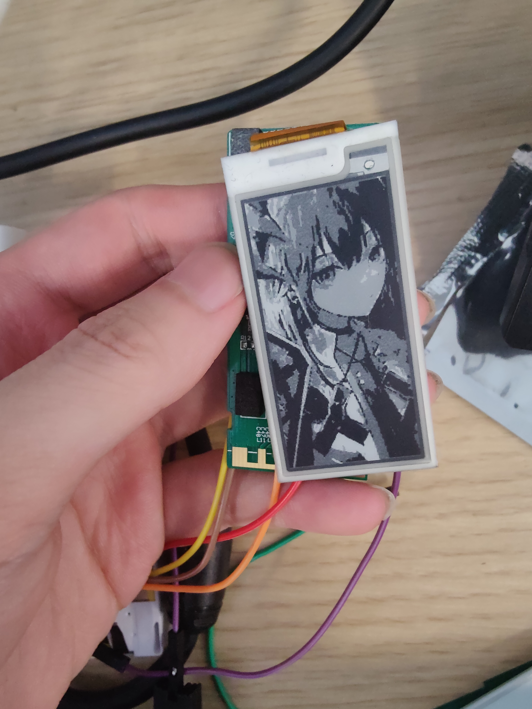
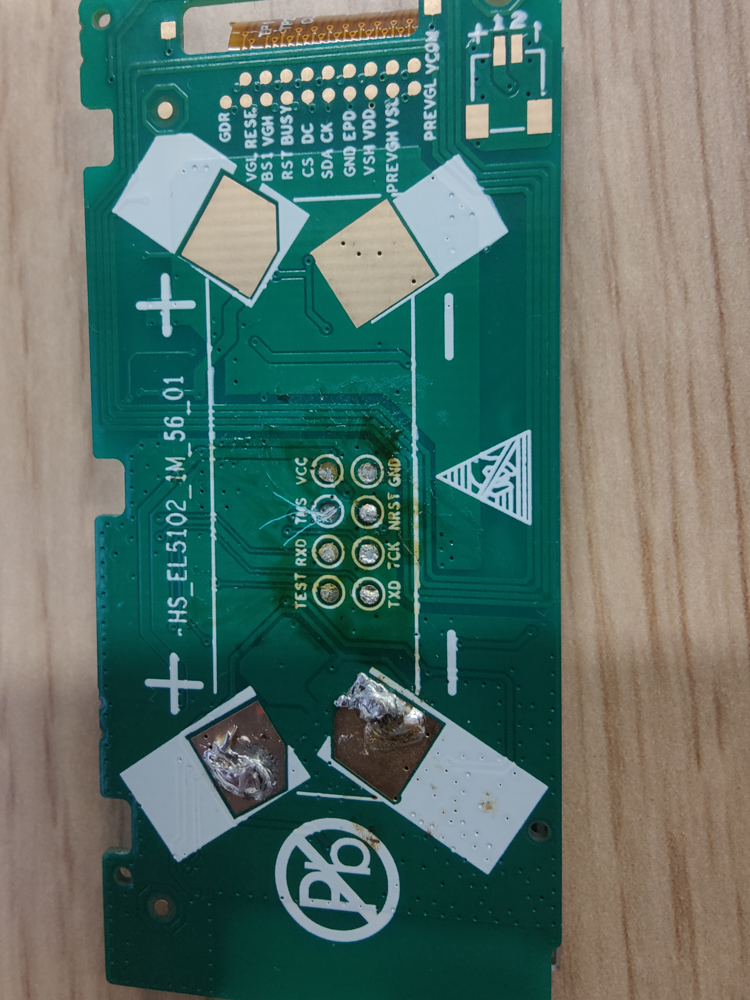
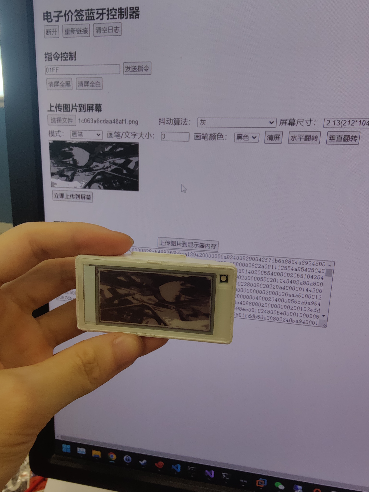
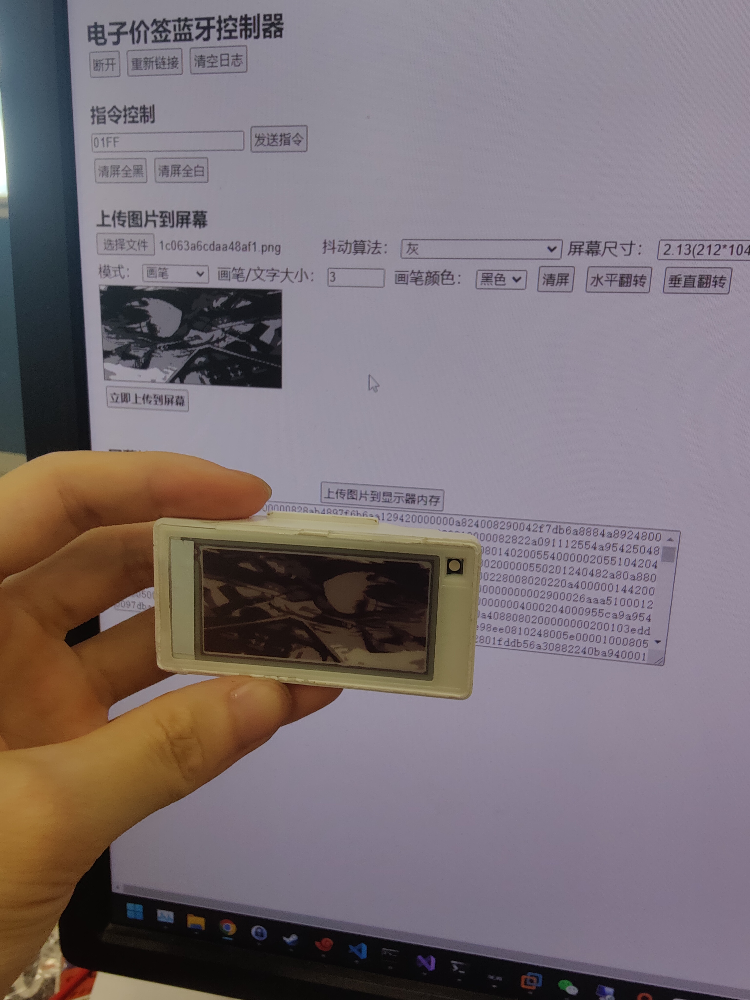

墨水屏折腾
前言
去年就买了几个墨水屏，本来打算玩的，但是一直抽不出时间（懒）。最近稍微闲下来点，来研究下墨水屏。
一开始捡的闲鱼2.13寸的黑白屏，7块钱一个。但是这个不支持蓝牙，玩了一下又入了一批支持蓝牙的版本，无线刷图还是要舒服一些的。
第一批墨水屏
这批墨水屏是Stellar-M型号的，一开始看了很多资料，感觉可搞才入的，但是后来到手才发现屏和主流的Stellar-M不太一样。
拆解和烧录程序参考这篇文章，这篇文章写的挺好，整个的操作基本是按照这篇文章走的。
汉朔的电池都是类似的拆法，拿螺丝刀抵住后面的卡扣往上翘就行，很容易拆下来。前面板是胶封的，得拿小刀从旁边小心的撬。
拆下来看，板子的主控是MSP430G2553，屏是WF0213T5PBZ08230H。
这个屏型号具体信息网上也搜不到，这个仓库里有类似型号的信息，但也不多，应该是WF-Tech无锡威峰的屏。
板子拆出来之后用串口怼上去，我用的CH340G，接线方法参考上面那篇文章。理想情况是可以只拆电池然后接调试口刷的，但是用串口刷的话要从pcb前面飞线，所以一定得把板子拆下来。
软件是使用IAR for msp430，之后的编译过程和烧录过程都和上面的文章一样。
然后喜闻乐见刷上去没反应。
网上搜了半天发现了这篇文章，发现是因为屏的原因，这个屏的主控是UC8151C，跟Eink的那款屏主控不一样，交互协议也不一样，而且屏的具体参数也有区别，UC8151C的这款屏分辨率是104*212的，相比之下分辨率要小了一圈，但是主控是支持4阶灰度显示的，这点比较好。
这个屏相关的一些讨论还有这个Thread。
从colz那篇文章里抓出来的代码刷上去已经可以正确驱动墨水屏了，但是没有灰度显示。难得有个支持灰度的屏不能用也太憋屈了。但是论坛老哥虽然说支持4灰阶但是也没给代码。
然后自己网上搜搜主控相关资料，发现大连佳显有一款屏也是同型号的主控，而且例程有四灰阶的显示，直接把例程移植过去，成了。
这个板子上还有个2.4G无线芯片A7106，理论上可以从一个屏控制其他屏，但是代码不会写，没研究了（
第二批墨水屏
这批墨水屏型号是Stellar-M3N@E31A和Stellar-XL3N@E31A。相比之前的墨水屏这个支持黑白红三色显示，而且主控有蓝牙功能，据说带N是支持NFC的意思，但是不太会玩。
2.13寸屏拆解的过程和之前的一样，4.2寸的屏因为前面板是卡扣扣上的，所以是可以无损拆卸的。
4.2寸的pcb整个和2.13不能说完全一致，只能说十分相似，肉眼看了下就4.2寸多了个flash，连layout也几乎一致。实际上2.13的代码改了改分辨率就能直接丢到4.2上跑，所以下面主要以2.13寸的屏来说下。
拆下来主控是TI的CC2640，屏是DEPG0213RHS75AF1CP，东方科脉的屏。这个屏在前面那个datasheet里也能找到同型号的屏，但是在后面实际开发过程中感觉这个数据是有点问题的。
先研究下怎么刷固件，正好手头有一个jlink，pcb背板引出来的调试接口感觉正好是给cjtag用的，准备用cjtag刷一下，但是接上之后没反应。网上搜了下发现是说cc2640有cjtag但是只有xds的调试器是支持的，jlink用不了。
无奈找同学接了一个xds110来刷，这下认了。
接线就是背板的VCC，GND，TMS，TCK，NRST和xds110对应的引脚接起来就行了，垃圾焊工导致下面这个板子TMS焊盘被我搞掉了（后来整了个调试夹子
刷写固件用的是uniflash，一开始不知道为啥xds读取写入感觉怪怪的，老是写不进去，而且读取有时候能读，有时候读出来有是空的，感觉供电有点问题，把xds板子上面一个XDS110Power的脚短接之后就正常了。。。也不知道这个脚具体是干啥的。供电不稳的情况下强行写入还把一个板子干烂了，好像是把CCFG写了把调试接口锁了。。血亏5块。
之后找能用的固件，一开始入这个板子原本是看到这个项目，专门找的Stellar-M3N买的，结果到手了发现还是不一样（。那个项目的主控是TLSR8359，这个板子是cc2640，直接烂掉。
之后找找有没有别的可以用的，然后发现了这篇文章，都是CC2640的主控，整个源码编译烧录流程可以直接按照他这个走。他的仓库里的代码也可以直接使用，就直接拿他的代码来用了。
蓝牙控制试了下他仓库里的app，发现实在有点难用，然后找了这个仓库的web端来操控，稍微改了下两边的源码把它们胶起来，就可以舒服的使用了。
然后有了之前折腾灰度的经验，想着能不能把这个屏也搞上灰度，研究了一下发现了这个仓库，原理是用到了一个叫LUT的东西，即 Waveform Look Up Table(LUT)，详细说明可以看这篇博客的结尾。
然后对照了看了下源码和芯片手册，本来照着epd-datasheet查出来屏的主控是SSD1675B，但是手册上LUT感觉对不上，源码中LUT长度只有70，之后东翻翻西找找好像找到了这个屏的官方文档https://github.com/eleree/depg0213rh，这个屏的主控疑似是SSD1619A，之后照着手册搓了个LUT出来，

大意就是刷黑的话就每次以正电压持续3个周期，之后静置5个周期，纯yy出来的，感觉效果还行。要刷4阶灰度就先用这个波形刷一遍最浅的灰，之后在用这个波形刷一遍，如果刷的区域和最浅的灰重叠，重叠部分就会变成较黑的灰，同理再刷更深色的灰，这个波形刷3次基本就是黑色的，所以只有4阶灰。更高的灰阶也可以实现，只要改下持续周期和电压强度。
之后改了下web，上屏，使用。
 

支持bw和bwr，灰度三种显示模式。
这个项目开源放在了https://github.com/ihopenot/ihopebleepd
局刷也能搞，把清空的波形去掉就行了，懒得搞了，反正只是显示图片。
低功耗不会搞（，现在得经常把电池拔拔插插来省电（